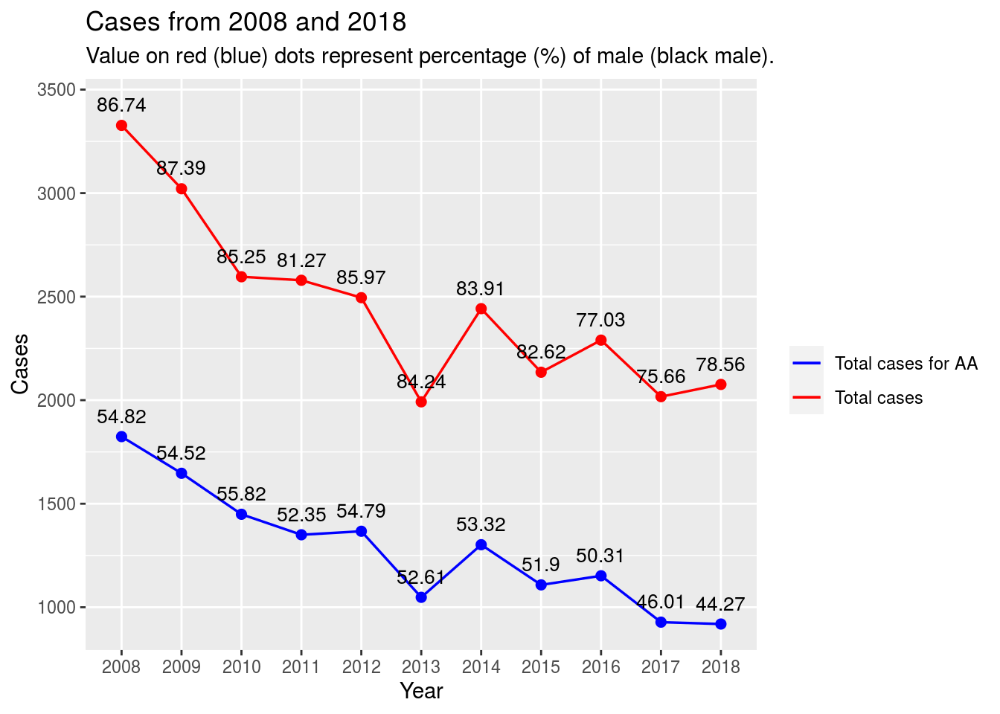
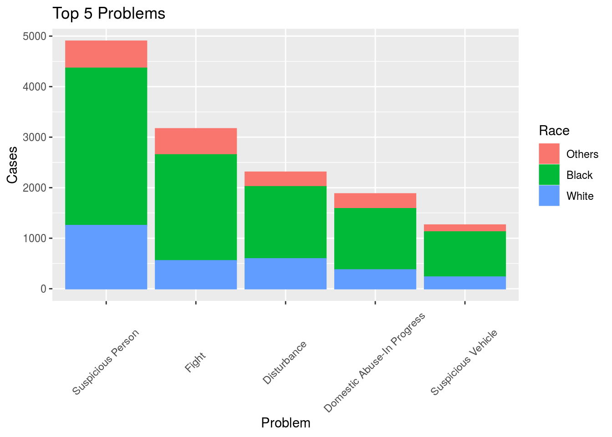
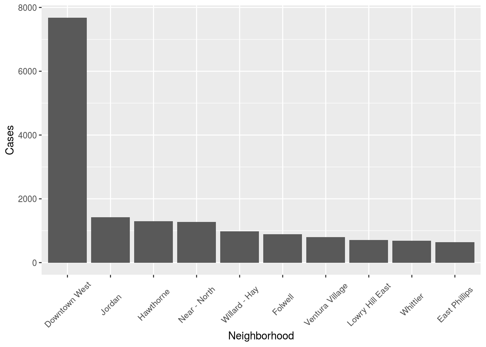
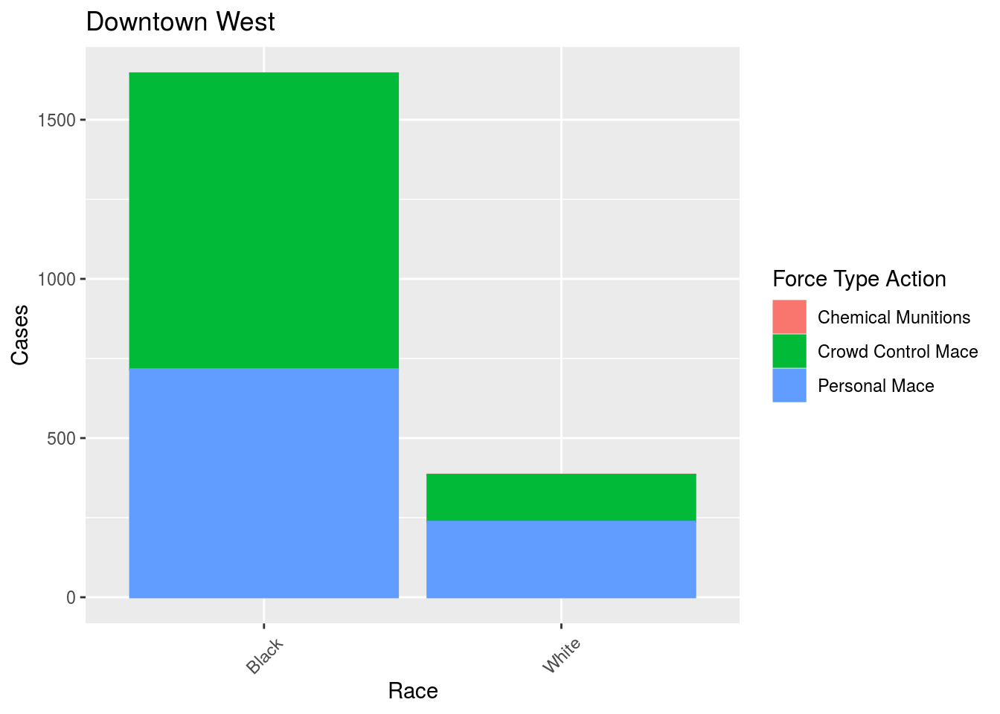

Final Project on Use of Force by Minneapolis Police
Cameron, Changhan, Chris, Sejeong
6/5/2020
## ── Attaching packages ────────────────────────────── tidyverse 1.3.0 ──## ✓ ggplot2 3.3.1 ✓ purrr 0.3.4
## ✓ tibble 3.0.1 ✓ dplyr 1.0.0
## ✓ tidyr 1.1.0 ✓ stringr 1.4.0
## ✓ readr 1.3.1 ✓ forcats 0.5.0## ── Conflicts ───────────────────────────────── tidyverse_conflicts() ──
## x dplyr::filter() masks stats::filter()
## x dplyr::lag() masks stats::lag()Police brutality has long been an issue in the United States. The recent killing of George Floyd has again cast a spotlight on policing practices in America. We decided to study data on the use of force by police in Minneapolis. Breaking it down by race we have the following.
## `summarise()` ungrouping output (override with `.groups` argument)
Something imporant to keep in mind is that only 18.6% of the population of Minneapolis is black 1. So it’s obvious that a African Americans are disproportionately targeted by the police. Let’s break it down by nieghborhood
## `summarise()` ungrouping output (override with `.groups` argument)
So the majority of cases take place in the Downtown West neighborhood of Minneapolis, the heart of the city. The following graphic breaks down the cases by the problem.
## `summarise()` ungrouping output (override with `.groups` argument)
## `summarise()` ungrouping output (override with `.groups` argument)
## `summarise()` ungrouping output (override with `.groups` argument)
Again we see the same trend in Downtown West as we see in all of Minneapolis.




Cameron’s code
police %>%
filter(Race %in% c("Black", "White")) %>%
ggplot() +
geom_bar(aes(x = Race, color = SubjectInjury, fill = SubjectInjury)) +
theme(axis.text.x = element_text(angle = 45, vjust = .5)) +
labs(x = "Race", y = "Cases", color = "Injury", fill = "Injury")
Changhan’s code.
police_nested =
police %>%
mutate(ResponseYr = substr(ResponseDate, 1, 4)) %>%
group_by(ResponseYr) %>%
nest()
police_nested = police_nested[1:11,]
Year <-police_nested$ResponseYr
total_yr <- data.frame(Yr = Year , Case=0 , Male_percent=0, Black_male_case=0, Black_male_percent=0)
for (i in 1:11) {
total_yr[i,2] =
police_nested$data[[i]] %>%
summarise(n = n())
total_yr[i,3] =
police_nested$data[[i]] %>%
filter(Sex == "Male") %>%
summarise(n = n())
total_yr[i,4] =
police_nested$data[[i]] %>%
filter(Race == "Black" & Sex == "Male") %>%
summarise(n = n())
}
total_yr =
total_yr %>%
mutate(Male_percent=round(((Male_percent/Case)*100),2), Black_male_percent=round(((Black_male_case/Case)*100),2))
ggplot(data = total_yr, mapping = aes(x=Year)) +
geom_line(aes(y = Black_male_case, color="Total cases for AA"),group = 1, size=0.6) +
geom_line(aes(y = Case, color="Total cases"),group = 1, size=0.6) +
scale_colour_manual("",
breaks = c("Total cases for AA", "Total cases"),
values = c("Blue","Red")) +
geom_point(aes(y = Case), color="Red", size=2) +
geom_text(aes(y = Case+100, label = Male_percent), size = 3.5) +
geom_point(aes(y = Black_male_case), size=2,color="Blue") +
geom_text(aes(y = Black_male_case+100, label = Black_male_percent), size = 3.5) +
xlab("Year") + ylab("Case Numbers") +
ggtitle("Case numbers from 2008 and 2018", "Value on red (blue) dots represents percentage (%) of male (black male) involving in the case.")
Age <- factor(x=c("Younger than 20", "20 to 40", "40 to 60", "Older than 60"),
levels=c("Younger than 20", "20 to 40", "40 to 60", "Older than 60"))
total_age1 =
police %>%
filter(0<EventAge, EventAge<=20) %>%
group_by(Sex) %>%
summarise(n=n())## `summarise()` ungrouping output (override with `.groups` argument)## `summarise()` ungrouping output (override with `.groups` argument)## `summarise()` ungrouping output (override with `.groups` argument)## `summarise()` ungrouping output (override with `.groups` argument)total_age <- rbind(total_age1, total_age2, total_age3, total_age4)
case_age <- c(5625, 18136, 3884, 169)
age_male <- c(0, 0, 0, 0)
age_male[1] <- round(total_age1[2,2]/case_age[1]*100,2)
age_male[2] <- round(total_age2[2,2]/case_age[2]*100,2)
age_male[3] <- round(total_age3[2,2]/case_age[3]*100,2)
age_male[4] <- round(total_age4[2,2]/case_age[4]*100,2)
data_age <- data.frame(Age = Age , Case=case_age)
ggplot(data = data_age, mapping = aes(x = Age, y = Case, fill = Age)) +
geom_bar(stat = 'identity', position = 'stack') +
geom_text(aes(y = Case+500, label = age_male), size = 4) +
xlab("Age") + ylab("Case Numbers") +
ggtitle("Case numbers for different ages", "Values represent the percentage (%) of male involving in the case.")
“U.S. Census website”. United States Census Bureau. October 5, 2010.↩